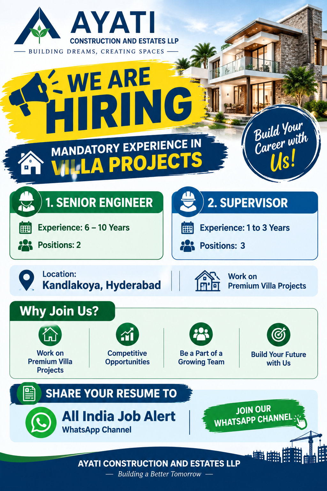

📢 All India Job Alert WhatsApp Channel
Latest private jobs, construction jobs, civil engineering jobs, Hyderabad vacancies and walk-in interview updates ke liye hamara WhatsApp Channel join karein.
JOIN ALL INDIA JOB ALERTAll India Job Alert
Ayati Construction and Estates LLP Recruitment 2026
Ayati Construction and Estates LLP has announced exciting career opportunities for construction professionals in Hyderabad. The current recruitment is focused on candidates who have relevant experience in villa projects. The company is looking for experienced professionals for the positions of Senior Engineer and Supervisor for its project at Kandlakoya, Hyderabad.
This recruitment opportunity can be considered by candidates who have practical experience in construction and have previously worked on villa projects. The company has specifically mentioned that experience in villa projects is mandatory. Therefore, candidates should carefully check their previous project experience before applying for the available positions.
The vacancies are suitable for professionals who want to build their career in premium residential construction. Villa projects require proper planning, execution, supervision, quality control, coordination and attention to construction details. Candidates with relevant site experience can highlight their responsibilities and achievements in their updated resume.
The job location mentioned for these openings is Kandlakoya, Hyderabad. Candidates who are currently available in Hyderabad or are willing to work at the mentioned project location can consider these opportunities according to their experience and suitability.
Current Open Positions
1. Senior Engineer
Experience: 6 – 10 Years
Number of Positions: 2
The Senior Engineer position is suitable for experienced construction professionals having between 6 and 10 years of relevant experience. Candidates must have experience in villa projects as specifically mentioned in the recruitment requirement.
Senior Engineers working on residential villa projects may be involved in site execution, construction supervision, contractor coordination, quality monitoring, progress tracking and coordination with other project departments. Candidates should mention their actual responsibilities and project experience clearly in their resume.
2. Supervisor
Experience: 1 to 3 Years
Number of Positions: 3
The Supervisor position is suitable for candidates having 1 to 3 years of relevant experience. Villa project experience is mandatory for this opening. Candidates with practical residential construction-site experience can apply.
Supervisors may be responsible for monitoring daily site activities, coordinating workers, checking work progress and supporting engineers during construction activities. Candidates should mention their actual site responsibilities and villa project exposure in their CV.
Mandatory Villa Project Experience
Important: Experience in villa projects is mandatory for these openings. Candidates without the required villa project experience should carefully check their eligibility before submitting their resume.
Villa construction is different from many other types of construction because the project requires detailed coordination of civil, architectural, finishing and building-services activities. Candidates who have already worked on villa projects may have better understanding of the execution requirements and site coordination involved in premium residential developments.
Applicants should provide genuine information about their previous projects. The resume should clearly mention the company name, project location, project type, designation, total experience and key responsibilities. If the candidate has specifically worked on villa projects, this experience should be clearly visible in the CV.
Job Location
Project Location: Kandlakoya, Hyderabad
The available positions are for a project located at Kandlakoya, Hyderabad. Candidates should consider the project location before applying and should be comfortable with the required work location.
Why Join Ayati Construction and Estates LLP?
The recruitment announcement highlights opportunities to work on premium villa projects. Residential villa developments require experienced construction professionals who can contribute to quality execution and project progress.
- Opportunity to work on premium villa projects
- Construction-site exposure in Hyderabad
- Opportunity for experienced Senior Engineers
- Supervisory opportunities for professionals with 1–3 years of experience
- Opportunity to be part of a growing construction team
- Experience in premium residential construction projects
Who Can Apply?
Candidates with relevant construction experience can apply for the position matching their experience. Senior Engineer applicants should have 6 to 10 years of experience, while Supervisor applicants should have 1 to 3 years of experience. Most importantly, candidates should have mandatory experience in villa projects.
Candidates should make sure that the information provided in the resume is accurate. Details such as total experience, designation, project type, project location and responsibilities should be clearly mentioned. Applicants with relevant residential or villa construction experience should highlight this experience prominently.
How to Prepare Your Resume
Before applying, candidates should update their resume with their latest professional information. The CV should include educational qualification, total work experience, previous employers, project experience, current designation and contact details.
For candidates applying for the Senior Engineer position, it is useful to clearly mention the number of years of experience and the villa projects handled. Candidates should also mention their actual construction responsibilities, coordination experience and site execution exposure.
Supervisors should mention their practical site experience, manpower coordination, daily work monitoring, construction activities and villa project exposure wherever applicable. A simple and professional resume can make it easier for the recruitment team to review the candidate's profile.
How to Apply
Interested and eligible candidates can share their updated resume through the contact details given below.
Candidates must clearly mention their relevant villa project experience in the resume. The recruitment contact has specifically requested candidates to share their resume/details and has stated STRICTLY NO CALLS.
📱 WhatsApp / Resume:
+91 78429 44949
⚠️ Important: Strictly No Calls.
📧 Email:
career@ayaticonstructions.com
Company:
Ayati Construction and Estates LLP
📲 Get More Job Updates
Hyderabad construction jobs, Civil Engineer jobs, Supervisor jobs, MEP jobs, private company vacancies and latest recruitment updates ke liye All India Job Alert WhatsApp Channel join karein.
JOIN WHATSAPP CHANNELImportant Information for Applicants
Candidates should verify the job details and recruitment communication before submitting documents or travelling to any project location. Applicants should use only the official contact information provided for this recruitment.
Candidates should never pay money to any person promising a job, selection or interview. Genuine applicants should be careful with their personal information and should not share OTPs, passwords, banking PINs or other sensitive financial information with unknown persons.
The vacancy information on this page is based on the recruitment details provided for Ayati Construction and Estates LLP. Candidates should independently confirm the current availability of the position, selection process, salary, working conditions and other employment terms before joining.
Frequently Asked Questions
What company is hiring?
Ayati Construction and Estates LLP is hiring for the mentioned construction positions.
Where is the job location?
The project location mentioned in the recruitment information is Kandlakoya, Hyderabad.
Which positions are available?
The current openings are Senior Engineer and Supervisor. There are 2 positions for Senior Engineer and 3 positions for Supervisor.
How much experience is required?
Senior Engineer candidates require 6–10 years of experience. Supervisor candidates require 1–3 years of experience. Villa project experience is mandatory.
Can candidates call the recruitment number?
No. The recruitment information specifically states STRICTLY NO CALLS. Candidates should share their resume through the provided WhatsApp number or email address.
Final Words
Ayati Construction and Estates LLP has announced recruitment opportunities for construction professionals at Kandlakoya, Hyderabad. The current openings include Senior Engineer and Supervisor positions for candidates having mandatory villa project experience.
Senior Engineer candidates with 6–10 years of experience can apply for 2 positions, while candidates with 1–3 years of experience can apply for 3 Supervisor positions. Applicants should carefully check the experience requirement and make sure that their profile matches the villa project requirement.
Interested candidates can share their updated resume through +91 78429 44949 or career@ayaticonstructions.com. Candidates should note that the recruitment instruction says strictly no calls.
If you are looking for more construction, engineering and private job vacancies, join the All India Job Alert WhatsApp Channel for regular recruitment updates.